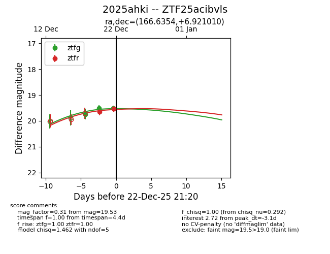
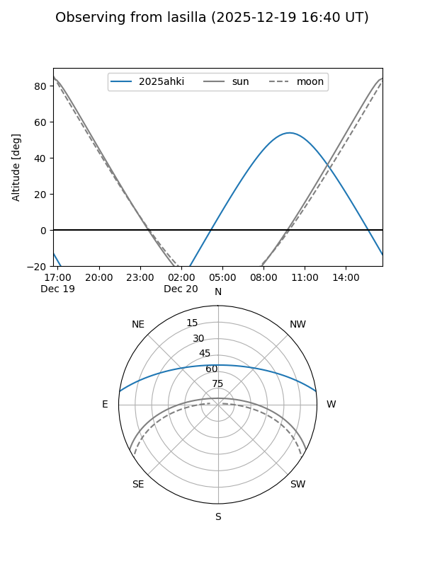
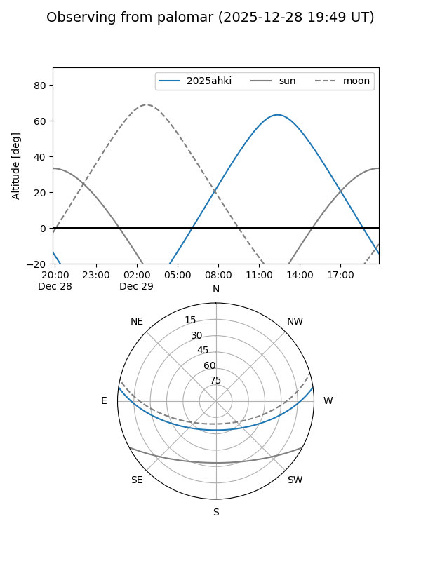

2025ahki
Target 2025ahki at 2025-12-31 18:00
Aliases and brokers:
FINK: link
Lasair: link
ALeRCE: link
TNS: link
YSE: link
alt names
ZTF25acibvls (ztf,fink_ztf)
2025ahki (tns,yse)
Coordinates:
equatorial (ra, dec) = 166.6354,+6.92101
equatorial (HMS+DMS) = 11:06:32.49,+06:55:15.64
galactic (l, b) = (247.1953,+57.94214)
Flags:
Photometry:
last ztfg=19.42, ztfr=19.45
4 ztfg, 3 ztfr detections
Lightcurve

Visibility


Additional plots